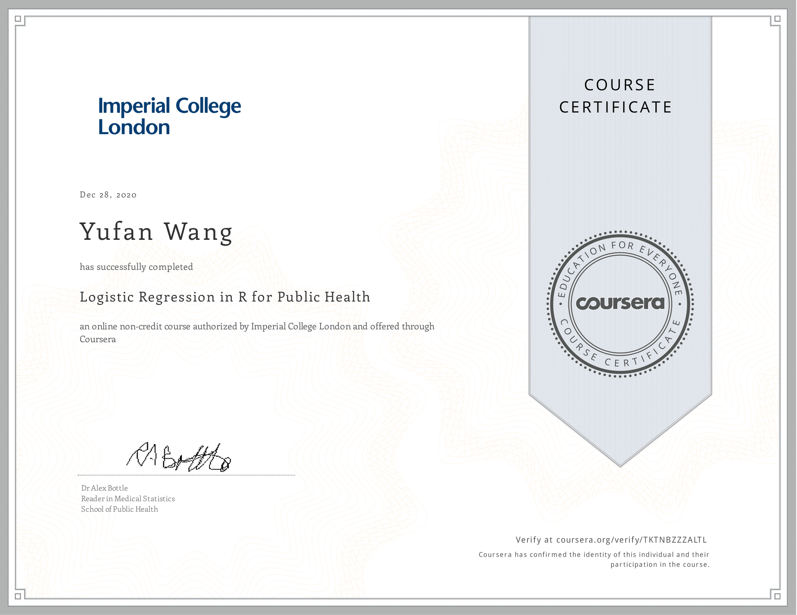
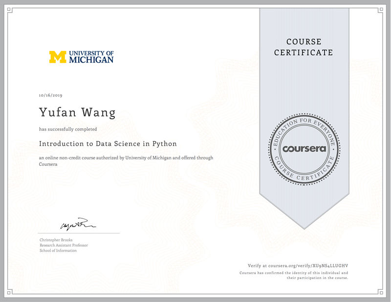

Activities
Online Courses
|  | Statistical Analysis with R for Public Health Specialization (Logistic Regression in R for Public Health) by Imperial College London in Coursera Check here to see the certificate. |
Statistical Analysis with R for Public Health Specialization (Linear Regression in R for Public Health) by Imperial College London in Coursera Check here to see the certificate. |
Statistical Analysis with R for Public Health Specialization (Introduction to Statistics & Data Analysis in Public Health) by Imperial College London in Coursera Check here to see the certificate. |
|  | Introduction to Data Science in Python in Coursera Check here to see the certificate. |
Machine Learning by Stanford University in Coursera Check here to see the certificate. |
 |
Introduction to Probability and Data (Statistics with R) by Duke University in Coursera Check here to see the certificate. |
Inferential Statistics (Statistics with R) by Duke University in Coursera Check here to see the certificate. |
Volunteer Activities
Joined 20 volunteer activities, serving 1000+ individuals in total with 409 hours of volunteer work. Led 40+ students to plan, organize and execute 10+ large-scale activities.
Chorus
Member of the Bass Voice of the International School Choir(ISC) of Beijing University of Posts and Telecommunications(BUPT). In 2018, the ISC won the first place in the "May Flowers" Choir Festival of BUPT.